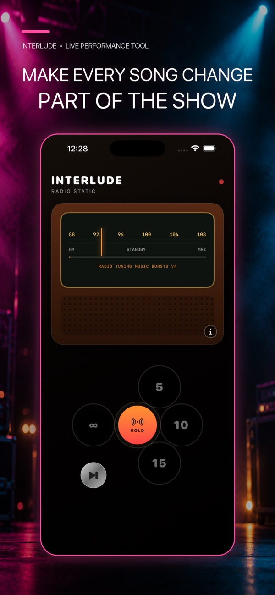
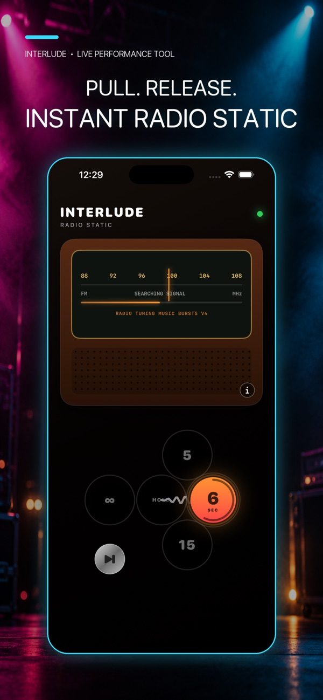
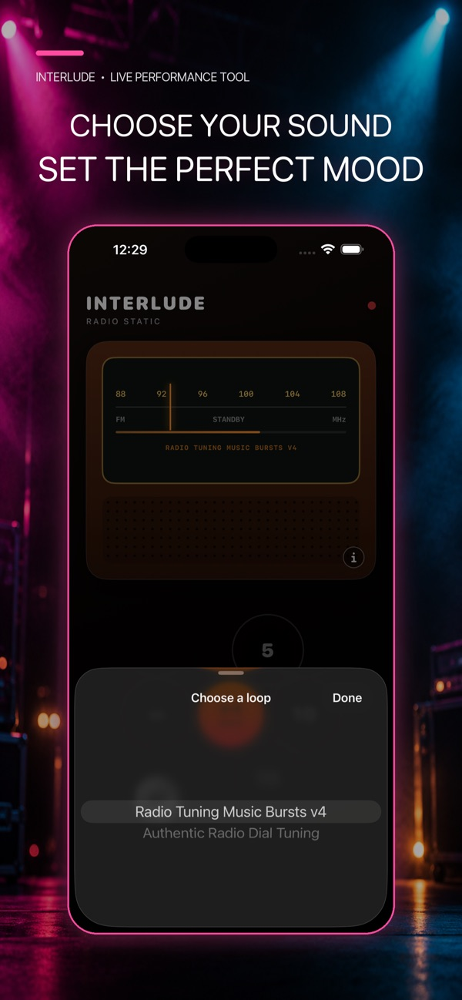
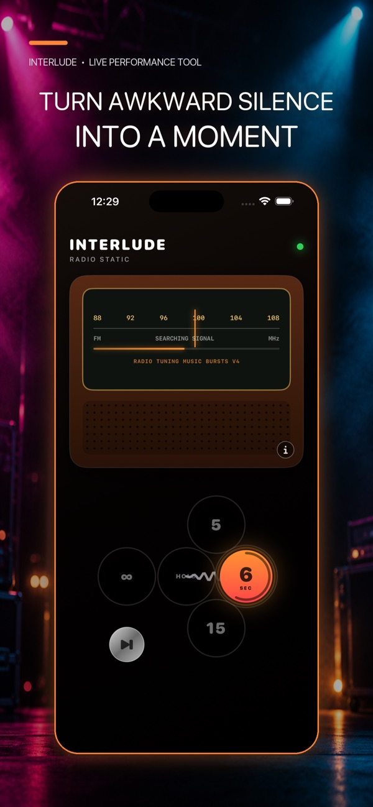
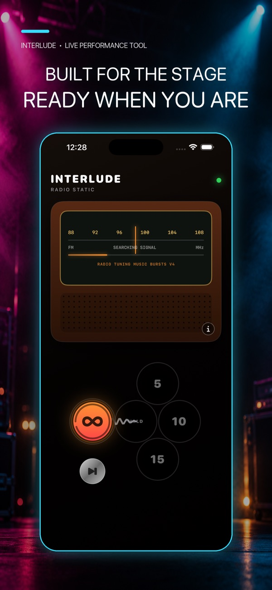

Give the gaps some atmosphere
Bring the familiar sound of tuning an old radio to the moments between songs. Keep a little atmosphere in the room while the next part of the performance takes shape.
Turn the quiet gaps between songs into part of the show. InterludeRadio brings nostalgic radio-tuning sounds to live performances: connect your device to the PA, choose your sound and fill the silence while you get ready.
Bring the familiar sound of tuning an old radio to the moments between songs. Keep a little atmosphere in the room while the next part of the performance takes shape.
Pick a loop from the sound selector, including radio-tuning music bursts and authentic radio dial tuning. Find the texture that suits your performance.
Connect your device to your PA and use InterludeRadio for the changeover. The focused playback screen keeps the job straightforward when there is plenty else to think about.
Use it between tracks, during setup or while you prepare the next song. Give those small pauses a place in the show, with a radio-inspired look to match the sound.
Explore the radio-inspired interface, simple playback and choice of sounds in the official app previews.





Getting started, everyday questions and a way to reach us if you need help.
InterludeRadio plays radio-static and tuning-style sounds for live performances. Use it to create the feel of moving along an old radio dial between songs.
Connect your device’s audio output to the PA using your usual compatible connection. Check the output and volume before the performance, then start playback when you want to fill a gap.
Yes. Open the loop selector in the app to choose from the available radio-tuning sounds. Pick the one that fits the atmosphere you want.
Email support@cakesquared.co.uk. For a bug report, include your device model, software version and what happened so we can help.
Last updated: September 2026
InterludeRadio does not collect personal data. App Store payments, if any, are handled by Apple.